Plotting MCMC draws using the bayesplot package
Jonah Gabry
2017-06-16
This vignette focuses on plotting parameter estimates from MCMC draws. MCMC diagnostic plots are covered in the separate vignette Visual MCMC diagnostics using the bayesplot package, and graphical posterior predictive checks are covered in Graphical posterior predictive checks using the bayesplot package.
Plots for MCMC draws
The bayesplot package provides various plotting functions for visualizing Markov chain Monte Carlo (MCMC) draws from the posterior distribution of the parameters of a Bayesian model.
In this vignette we’ll use draws obtained using the stan_glm function in the rstanarm package (Gabry and Goodrich, 2016), but MCMC draws from using any package can be used with the functions in the bayesplot package. See, for example, brms (which, like rstanarm, calls the rstan package internally to use Stan’s MCMC sampler).
library("rstanarm")
fit <- stan_glm(
mpg ~ ., # ~ . includes all other variables in dataset
data = mtcars,
chains = 4,
iter = 2000,
seed = 1111
)
print(fit)stan_glm
family: gaussian [identity]
formula: mpg ~ .
num. obs: 32
------
Estimates:
Median MAD_SD
(Intercept) 12.2 18.2
cyl -0.1 1.1
disp 0.0 0.0
hp 0.0 0.0
drat 0.8 1.7
wt -3.6 2.0
qsec 0.8 0.7
vs 0.3 2.2
am 2.5 2.1
gear 0.7 1.6
carb -0.3 0.9
sigma 2.8 0.4
Sample avg. posterior predictive
distribution of y (X = xbar):
Median MAD_SD
mean_PPD 20.1 0.7
------
For info on the priors used see help('prior_summary.stanreg').To use the posterior draws with the functions in the bayesplot package we’ll extract them from the fitted model object:
posterior <- as.array(fit)
dim(posterior)[1] 1000 4 12dimnames(posterior)$iterations
NULL
$chains
[1] "chain:1" "chain:2" "chain:3" "chain:4"
$parameters
[1] "(Intercept)" "cyl" "disp" "hp" "drat"
[6] "wt" "qsec" "vs" "am" "gear"
[11] "carb" "sigma" Interval estimates
Posterior intervals for the parameters can be plotted using the mcmc_intervals function.
library("bayesplot")
color_scheme_set("red")
mcmc_intervals(posterior, pars = c("cyl", "drat", "am", "sigma"))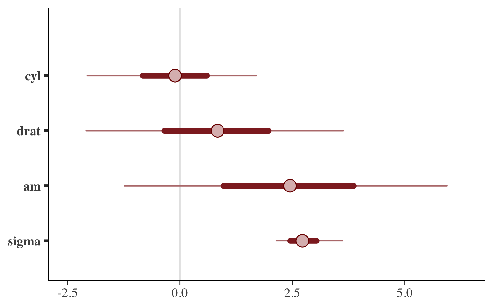
The default is to show 50% intervals (the thick lines) and 90% intervals (the thinner outer lines). These defaults can be changed using the prob and prob_outer arguments, respectively. The points in the above plot are posterior medians. The point_est argument can be used to select posterior means instead or to omit the point estimates.
To show the uncertainty intervals as shaded areas under the estimated posterior density curves we can use the mcmc_areas function:
mcmc_areas(
posterior,
pars = c("cyl", "drat", "am", "sigma"),
prob = 0.8, # 80% intervals
prob_outer = 0.99, # 99%
point_est = "mean"
)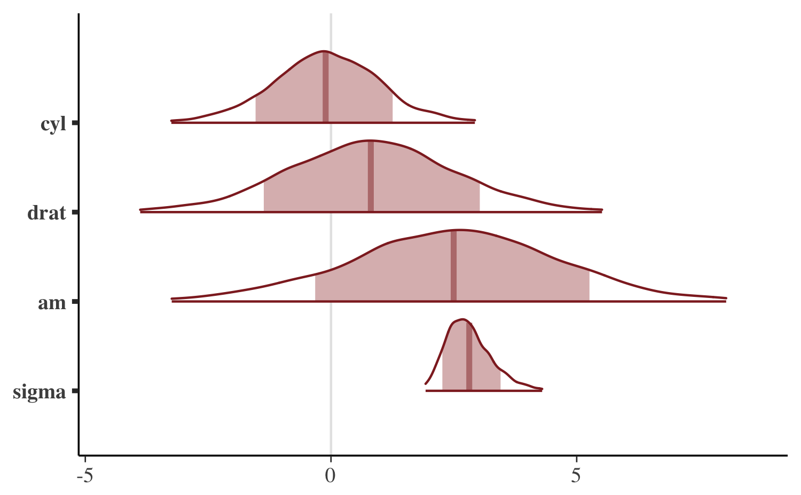
Histograms and density estimates
Histograms or kernel density estimates of posterior distributions of the various model parameters can be visualized using the functions described on the MCMC-distributions page in the bayesplot documentation.
Histograms
The mcmc_hist and mcmc_dens functions plot posterior distributions (combining all chains):
color_scheme_set("green")
mcmc_hist(posterior, pars = c("wt", "am"))
mcmc_dens(posterior, pars = c("wt", "am"))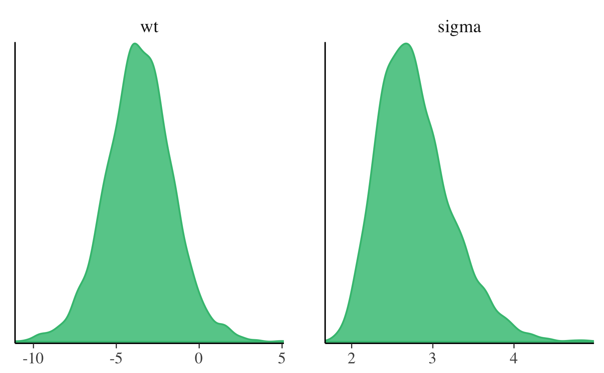
To view the four Markov chain separately we can use mcmc_hist_by_chain, mcmc_dens_overlay:
color_scheme_set("brightblue")
mcmc_hist_by_chain(posterior, pars = c("wt", "am"))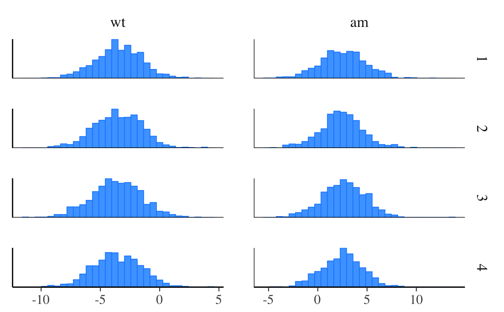
mcmc_dens_overlay(posterior, pars = c("wt", "am"))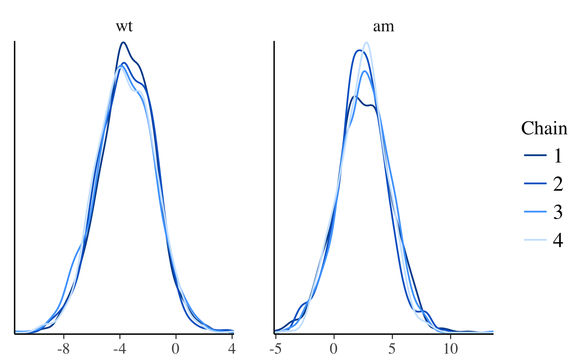
The mcmc_violin function also plots the density estimates of each chain as violins with horizontal lines at user-specified quantiles:
mcmc_violin(posterior, pars = c("wt", "am"), probs = c(0.1, 0.5, 0.9))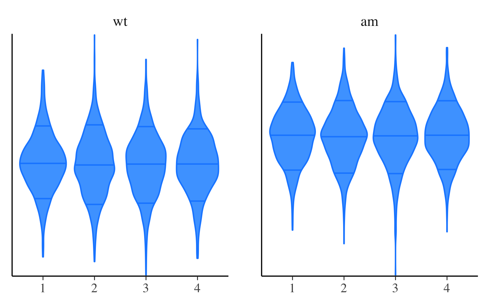
Scatterplots
The mcmc_scatter function creates a scatterplot with two parameters:
color_scheme_set("gray")
mcmc_scatter(posterior, pars = c("(Intercept)", "wt"), size = 1.5, alpha = 0.5)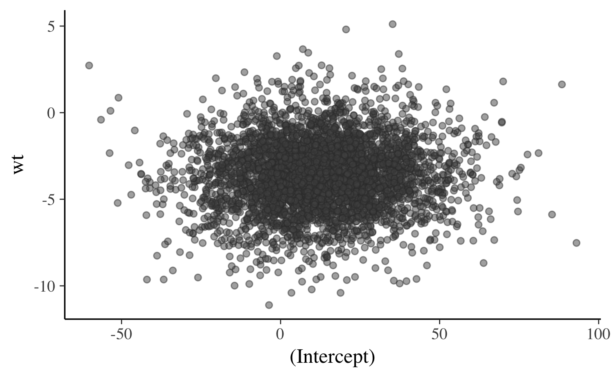
The mcmc_hex function creates a similar plot but using hexagonal binning, which can be useful to avoid overplotting:
mcmc_hex(posterior, pars = c("(Intercept)", "wt"))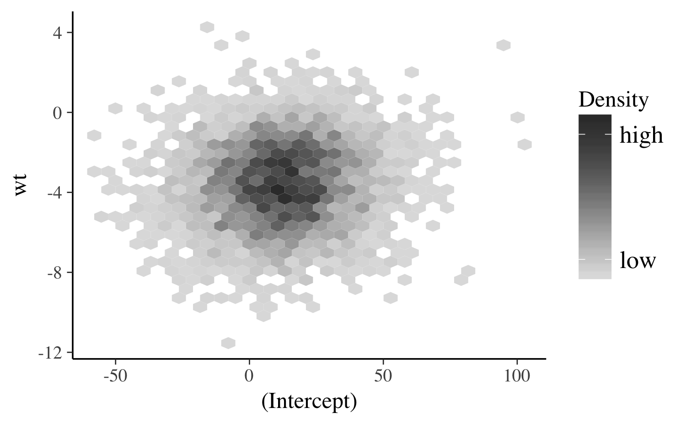
In addition to mcmc_scatter and mcmc_hex, as of bayesplot version 1.2.0 an mcmc_pairs function for creating pairs plots with more than two parameters is available. Examples will eventually be included in this vignette. For now see help("mcmc_pairs").
Traceplots
The mcmc_trace function creates standard traceplots:
color_scheme_set("blue")
mcmc_trace(posterior, pars = c("wt", "sigma"))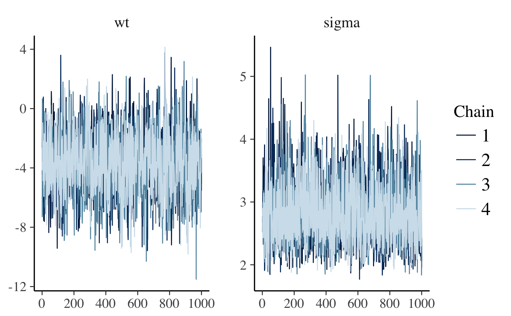
If it’s hard to see the difference between the chains we can change to a mixed color scheme, for example:
color_scheme_set("mix-blue-red")
mcmc_trace(posterior, pars = c("wt", "sigma"),
facet_args = list(ncol = 1, strip.position = "left"))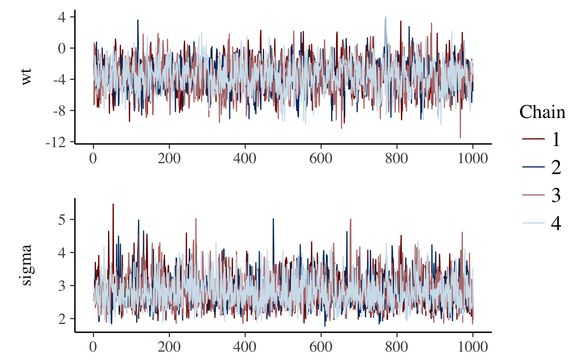 The code above also illustrates the use of the facet_args argument, which is a list of parameters passed to facet_wrap in ggplot2. Specifying ncol=1 means the traceplots will be stacked in a single column rather than placed side by side, and strip.position="left" moves the facet labels to the y-axis (instead of above each facet).
The "viridis" color scheme is also useful for traceplots because it is comprised of very distinct colors:
color_scheme_set("viridis")
mcmc_trace(posterior, pars = "(Intercept)")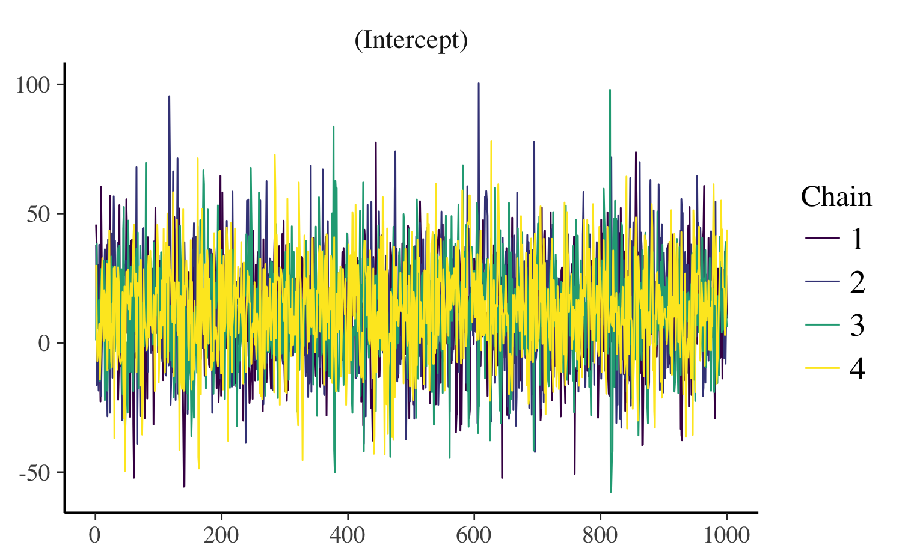
The mcmc_trace_highlight function uses points instead of lines and reduces the opacity of all but a single chain (which is specified using the highlight argument).
mcmc_trace_highlight(posterior, pars = "sigma", highlight = 3)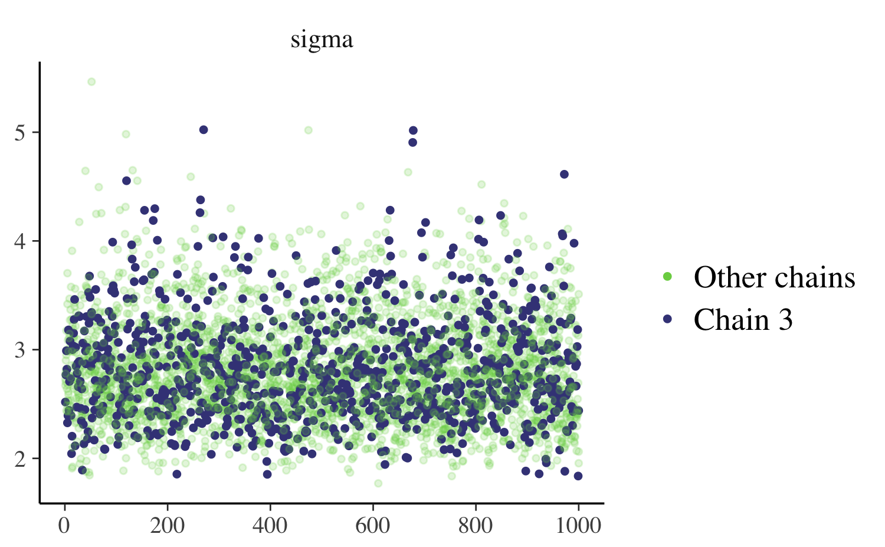
References
Gabry, J., and Goodrich, B. (2017). rstanarm: Bayesian Applied Regression Modeling via Stan. R package version 2.14.1. http://mc-stan.org/interfaces/rstanarm.html, https://CRAN.R-project.org/package=rstanarm
Gelman, A., Carlin, J. B., Stern, H. S., Dunson, D. B., Vehtari, A., and Rubin, D. B. (2013). Bayesian Data Analysis. Chapman & Hall/CRC Press, London, third edition.
Stan Development Team. (2016). Stan Modeling Language Users Guide and Reference Manual. http://mc-stan.org/documentation/